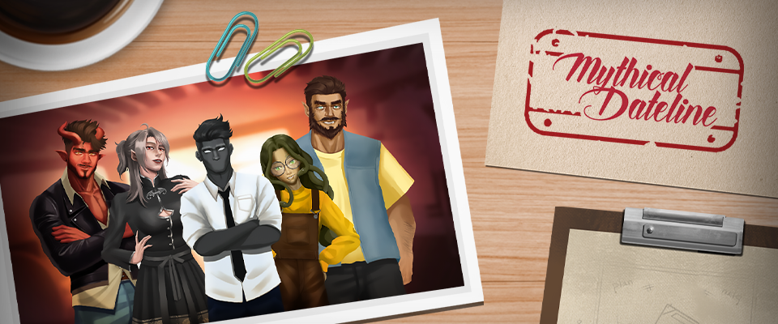
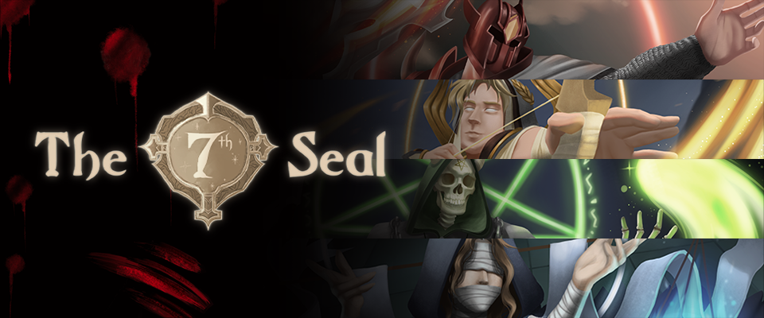

Mythical Dateline
Work in a event's company filled with mythical creatures.
(Final Year Project 2)
These are the major projects that I have worked on

Work in a event's company filled with mythical creatures.
(Final Year Project 2)

A hidden objects game where you play as the airline staff handling people's boarding pass.
(RedGames Jam 2025)

An ASEAN mythological hack and slash made for mobile devices.
(Game Project Studio 2)

A Lovecraftian rougelike with a solitaire twist.
(Game Project Studio 1)
Mythical Dateline is a visual novel with management simulator elements.
It is my Final Year Project that I have worked on with my team.
I was the sole lead programmer for the team. This made me be responsible for all the technical aspects for the game.
Below are the main features that I have worked on the game:
Management Gameplay system
Dynamic Event System
Dialogue System
Third Person Movement System
Challenges and reflections
Now Boarding is a hypercasual hidden object game made for browsers.
It was made as a submission for RedGames Jam 2025 with my FYP team members.
The game was selected as one of the Top 10 games of the jam.
As the main programmer of the game I have programmed the following systems:
Hidden Object Gameplay
Random Character Creator
Rapture Reign is a hack-and-slash action game for Android mobile devices.
It was my Game Project Studio 2 game made with my semester classmates.
Due to the size of the team, I have chosen to focus on VFX programming.
What I worked on:
The 7th Seal is a rougelike card game with a solitaire twist.
It was my Game Project Studio 1 game made with my teammates.
The game is the first major game that I have worked on.
I was the lead programmer on the game and worked together closely with co-progammer.
What I worked on:
Card Generator Prefab
Card Placement and Detection
UI Implementation